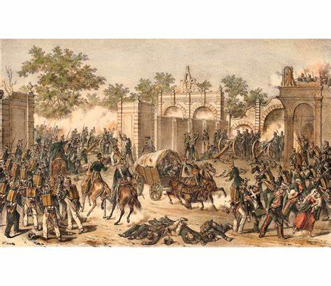

Bienvenido a la página

Descubre los momentos clave, personajes y obras que dieron forma a una de las transformaciones más profundas en la historia de México: La Reforma. Esta plataforma te invita a explorar su contexto, sus protagonistas y su legado.